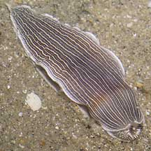
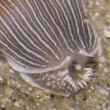
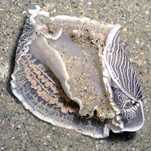
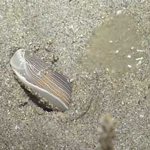

|
|
| nudibranchs text index | photo index |
| Phylum Mollusca > Class Gastropoda > sea slugs > Order Nudibranchia |
| Bumpy-faced
armina nudibranch Armina sp. Family Arminidae updated Mar 2020 Where seen? This armina nudibranch is sometimes seen on Changi and some of our Northern shores among seagrass meadows. It is often seen burrowing in sand. Features: 3-4cm long. Long, narrow body with stripes and a white border on the edge of the mantle skirt. The foot is white too. The wedge-shaped flap over its mouth (oral veil) has finger-like bumps on it. It lacks a feathery gill on its back. According to Bill Rudman, the coloured wiggly lines seen on the underside of the body are not gills although gas exchange may take place. These act like the cerata of aeolids, a place where the digestive gland can expand. These lines often are the same colour of their sea pen food. |
 Changi, Jul 05 |
 'Bumps' on its 'face'. |
 Wiggly lines under the mantle. Changi, Jul 05 |
| Sometimes mistaken for Semper's
armina nudibranch (Armina semperi) that has a more colourful
oral veil and foot and lacks 'bumps' on its face. What does it eat? As a group, the armina nudibranchs eat soft corals and sea pens. The bumpy-faced armina nudibranch is often seen near sea pencils. It is possible that they eat the sea pencils. Bill Rudman has a post sharing how an armina nudibranch feeds on a sea pen and is dragged down into the sand when the sea pen retracts. |
 Jelly-like egg mass next to it? Changi, Aug 05 |
 Next to a sea pencil. Changi, Jun 05 |
| Bumpy-faced armina nudibranch on Singapore shores |
On wildsingapore
flickr
|
| Other sightings on Singapore shores |
Links
|